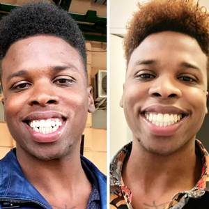
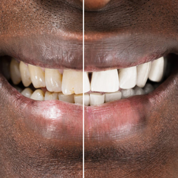

Your smile is one of your most valuable assets—and it deserves the best care possible. At our clinic, General Dentistry is at the heart of what we do. Whether you’re coming in for a routine check-up, treating a cavity, or experiencing tooth discomfort, we provide comprehensive and compassionate care tailored to your needs.
What is General Dentistry?
General Dentistry involves the diagnosis, prevention, and treatment of a wide range of conditions affecting the teeth, gums, and jaw. It’s your first line of defense against oral health problems and the foundation for long-term dental wellness. Our general dentists are trained to handle most dental issues with expertise and a gentle touch.
Our General Dentistry Services
We offer a full suite of services under General Dentistry, including:
Routine check-ups and professional cleanings help prevent decay and detect issues early. During your visit, we’ll examine your teeth, perform a thorough cleaning, and provide personalized oral hygiene tips to keep your mouth in top condition.
Tooth-Colored Fillings
Cavities happen, but we make fixing them easy and discreet. We use high-quality composite (tooth-colored) fillings that restore strength and blend seamlessly with your natural teeth.
In cases where a tooth is severely damaged or infected, an extraction may be necessary to protect your overall oral health. Our team ensures the process is comfortable and stress-free, offering sedation options when needed.
Fluoride Treatments & Sealants
Preventive treatments like fluoride applications and dental sealants offer extra protection—especially for children—by strengthening enamel and shielding teeth from decay.This thus helps prevent tooth sensitivity.
Oral and Maxillofacial Surgery
Expert Surgical Care for Complex Dental Needs
When dental problems go beyond the surface, you need specialized care that combines precision, experience, and compassion. Our Oral and Maxillofacial Surgery services are designed to handle complex conditions affecting the mouth, teeth, jaws, and facial structures.
Whether you're dealing with an impacted wisdom tooth, facial trauma, or need a biopsy or corrective procedure, our highly trained specialists are here to ensure you receive safe and effective treatment every step of the way.
What Is Oral and Maxillofacial Surgery?
Oral and Maxillofacial Surgery is a specialized branch of dentistry that focuses on surgical treatment of the mouth, face, and jaw. It bridges the gap between medicine and dentistry, addressing both functional and aesthetic concerns.
Our oral surgeon is trained to diagnose and treat a wide range of issues—using modern techniques and advanced technology to ensure optimal outcomes and faster recovery.
Fracture repair: mandible, maxilla, zygomatic bone, orbital floor, nasal bones
Soft tissue laceration repair of the face and oral cavity
Reconstruction of facial defects due to trauma or congenital deformities
Orthognathic (Corrective Jaw) Surgery
Surgical correction of jaw deformities (overbite, underbite, asymmetry)
Coordinated with orthodontic treatment
Improves both function (chewing, speech) and facial aesthetics
Temporomandibular Joint (TMJ) Disorders
Diagnosis and surgical/non-surgical management of TMJ dysfunction
Arthrocentesis and TMJ arthroscopy
TMJ joint replacement in severe cases
Cleft Lip and Palate Surgery
Surgical repair of congenital orofacial clefts
Ongoing multidisciplinary care including speech therapy and orthodontics
Oral Pathology and Biopsy
Diagnosis and management of oral lesions and tumors
Biopsy of suspicious growths in the mouth, jaw, or neck
Management of precancerous conditions and oral cancers
Facial Aesthetic Surgery
Cosmetic procedures such as rhinoplasty, genioplasty (chin surgery), and facial implants
Scar revision and soft tissue contouring
Dental Implant Surgery and Bone Grafting
Placement of dental implants
Sinus lift and bone augmentation procedures to support implants
Management of failed implants and peri-implantitis
Head and Neck Infections
Drainage of deep space infections
Management of odontogenic infections that have spread beyond the oral cavity
Hospital-based care for serious maxillofacial infections
Oncology and Reconstructive Surgery
Resection of benign and malignant tumors of the face, jaws, and neck
Reconstructive procedures including flap surgery and grafts
Rehabilitation with dental prosthetics and implants
Common Correcting surgeries We Offer
Correcting Fractured Jaws
Temporal mandibular joint(TMJ)
Cleft,lip and palate
Oral tumor surgeries
Correcting Fractured Jaws
Corrective surgery for fractured jaws involves repositioning and stabilizing the broken bones using plates, screws, or wires to restore normal function and facial symmetry.
TMJ surgery addresses joint dysfunction through procedures such as arthroscopy, discectomy, or joint replacement to relieve pain and restore proper jaw movement
Cleft,Lip and Palate Corrective Surgeries
Surgical correction of cleft lip and palate involves reconstructing the lip and/or palate to improve appearance, speech, and feeding functionality, usually performed in stages during early childhood.
Oral Tumor Surgeries
Oral tumor surgeries involve the excision of benign or malignant growths within the oral cavity, often followed by reconstructive procedures to restore form and function.
When to See an Oral Surgeon
You may need to consult our Oral and Maxillofacial team if you experience:
Persistent jaw pain or limited jaw movement
Impacted or severely damaged teeth
Facial soft tissue injury or facial bone injuries (trauma)
Oral cysts, growths, or abnormalities
Bite issues that can’t be resolved with orthodontics alone
If you’re unsure, we’re here to assess your condition and guide you on the best course of action.
Prosthodontics & Implantology
Restoring Your Smile with Confidence and Comfort
Missing teeth can affect more than just your appearance—they can impact how you eat, speak, and feel about yourself. Our Prosthodontics & Implantology services are designed to restore both function and beauty to your smile with long-lasting solutions tailored to your needs.
Whether you're missing one tooth, several, or all, our expert team offers a range of advanced options including dentures, crowns, bridges, and dental implants to help you smile with confidence again.
What is Prosthodontics?
Prosthodontics is a specialized field of dentistry focused on the design, creation, and fitting of artificial tooth replacements. It combines precision engineering with artistry to deliver natural-looking and fully functional restorations.
We take into account not just the missing teeth, but your overall oral health, bite alignment, and facial aesthetics to create solutions that feel comfortable and look great.
Dental Implants: A Permanent Solution
Dental implants are the gold standard for replacing missing teeth. They’re small titanium posts surgically placed into your jawbone, where they act as artificial tooth roots. Once healed, they can support crowns, bridges, or even full dentures.
Benefits of Implants:
Permanent and secure
Look and function like natural teeth
Preserve jawbone and facial structure
No slipping or clicking like traditional dentures
Whether you need a single implant or a full-mouth restoration, we’re here to guide you through every step of the process.
Dentures and Bridges: Reliable & Affordable Options
Not every patient is ready for or suited to implants. That’s why we also offer:
Full & Partial Dentures
Custom-crafted to fit comfortably and restore your ability to chew and speak properly. Modern materials make today’s dentures lighter, more natural-looking, and easier to wear.
Dental Bridges
Ideal for patients missing one or more teeth in a row. Bridges are anchored to adjacent teeth or implants and provide a fixed, stable solution to fill gaps and restore your bite.
Orthodontics
Straighten Your Smile, Boost Your Confidence
A straight, well-aligned smile not only looks great—it also supports better oral health. Our Orthodontics services are designed to correct misaligned teeth and jaws using proven techniques and modern technology.
Whether you’re a teen, an adult, or even a parent exploring options for your child, we offer personalized orthodontic care that’s effective, comfortable, and discreet.
Why Orthodontic Treatment Matters
Orthodontic treatment goes beyond just aesthetics. When teeth are crowded, spaced, or misaligned, it can lead to difficulty cleaning, increased risk of tooth decay, and jaw discomfort.
By gently guiding your teeth into the proper position, orthodontics can:
Benefits of Implants:
Improve your bite and chewing ability
Prevent future dental issues
Enhance your facial balance and smile
Boost your confidence in social and professional settings
Treatment Options We Offer
Traditional Metal Braces
These tried-and-true braces use high-grade stainless steel brackets and wires to gradually shift teeth into place. Today’s versions are smaller, more comfortable, and even customizable with colored bands.
Ceramic (Clear) Braces
Ceramic braces work like metal ones but use tooth-colored materials that blend in more naturally with your teeth—ideal for those who want a more discreet option without compromising effectiveness.
Clear Aligners (Invisalign-style)

Removable, transparent trays that straighten teeth with minimal disruption to your lifestyle. They’re nearly invisible, easy to clean, and allow you to eat without restrictions. Best for mild to moderate alignment issues.
Orthodontics for All Ages
Children & Teens:
Early assessment allows us to detect potential issues and guide jaw development before problems become severe.
Adults:
It’s never too late to straighten your smile. We offer discreet, effective options suited to busy adult lifestyles.
We’ll walk with you through the entire process from the initial consultation and x-rays to custom treatment planning, regular adjustments, and post-braces care.
Your smile is one of the first things people notice—why not make it unforgettable? Our Cosmetic Dentistry services are designed to enhance the appearance of your teeth, giving you the beautiful, confident smile you've always wanted.
Whether you're looking to brighten your smile, close gaps, reshape teeth, or achieve a full makeover, we offer advanced aesthetic treatments tailored to your unique goals.
What is Cosmetic Dentistry?
Cosmetic Dentistry focuses on improving the appearance of your teeth, gums, and overall smile. Unlike general dentistry, which addresses oral health and function, cosmetic procedures are elective and centered around enhancing beauty.
But don’t be mistaken—many cosmetic treatments also improve functionality, structure, and long-term dental health.
Our Cosmetic Services Include:
Teeth Whitening

Say goodbye to stains and discoloration. We offer safe, professional-grade whitening treatments that deliver dramatic results—up to several shades brighter in just one visit.
Dental Veneers
Thin, custom-made porcelain shells that cover the front surface of teeth. Veneers are perfect for fixing chipped, stained, crooked, or unevenly spaced teeth with a flawless, natural look.
Cosmetic Bonding
A quick and effective way to repair chips, close gaps, or reshape teeth using tooth-colored resin. It’s minimally invasive and can often be done in a single visit.
Gum Contouring
Also known as gum reshaping, this procedure corrects uneven gum lines or excessive gum tissue to reveal more of your natural tooth structure and create a balanced smile.
Smile Makeovers
A complete transformation combining multiple treatments such as veneers, whitening, and alignment. Ideal for anyone wanting a dramatic, yet natural, improvement in their smile.
Why Choose Us for Cosmetic Care?
Expert Craftsmanship
Our cosmetic work is driven by attention to detail and a passion for artistry.
Advanced Technology
We use digital smile design tools to preview your future smile before treatment begins.
Personalized Plans
No two smiles are the same. We listen to your goals and build a treatment plan that fits your vision and budget.
Endodontics (Root Canal Treatment)
Relief from Pain, Protection for Your Natural Teeth
If you're experiencing deep tooth pain, sensitivity to hot or cold, or swelling around your gums, you might need more than just a filling. Endodontic treatment, commonly known as a Root Canal, is a specialized procedure that saves damaged or infected teeth—relieving pain and preserving your natural smile.
At our clinic, we use modern techniques and technology to ensure your root canal treatment is comfortable, efficient, and highly effective.
What is Endodontics?
Endodontics is a dental specialty focused on the diagnosis and treatment of issues involving the tooth pulp (the soft inner tissue) and the roots. When the pulp becomes infected or inflamed—often due to deep decay, trauma, or repeated dental work—a root canal is the recommended treatment to prevent the need for extraction.
What Happens During a Root Canal?
Despite its reputation, a root canal is not painful—in fact, it relieves pain. Here's what the process typically involves:
Diagnosis & Imaging:
The area is numbed to ensure a pain-free experience.
Cleaning & Shaping:
The infected pulp is removed, and the inner chamber is cleaned and shaped.
Sealing:
The space is filled and sealed to prevent future infection.
Restoration:
A crown or filling is placed to restore strength and function to the tooth.
When Do You Need a Root Canal?
You may need endodontic treatment if you experience:
Persistent toothache or pressure
Sensitivity to heat or cold that lingers
Swollen or tender gums near the tooth
Darkening or discoloration of the tooth
A pimple-like bump on the gums (sign of an abscess)
Benefits of Root Canal Treatment
Pain Relief: Removes infection and discomfort quickly
Tooth Preservation: Keeps your natural tooth intact
Efficient Healing: Minimally invasive with short recovery time
Long-Term Results: With proper care, root canal-treated teeth can last a lifetime
Periodontics (Gum Disease Treatment)
Healthy Gums, Healthy Smile
Your gums are the foundation of your oral health. When they’re healthy, they support your teeth and keep your smile strong. But when gum disease sets in, it can silently damage your gums, bone, and even lead to tooth loss. That’s where Periodontics comes in.
Our gum specialists are here to detect, treat, and help you manage gum disease at every stage—so you can maintain a confident, healthy smile for life.
What is Periodontics?
Periodontics is the branch of dentistry focused on the prevention, diagnosis, and treatment of diseases that affect the gums and supporting structures of the teeth. It also includes the placement and maintenance of dental implants.
Whether you're dealing with mild inflammation or more advanced periodontal disease, our team offers personalized care plans designed to stop the progression and restore gum health.
Signs You Might Have Gum Disease
Gum disease often begins without pain, which is why regular dental checkups are essential. You may need periodontal care if you notice:
Bleeding gums when brushing or flossing
Swollen, tender, or red gums
Persistent bad breath
Loose teeth or shifting bite
Pus between teeth and gums
Receding gums or teeth appearing “longer”
Our Periodontal Services
Scaling and Root Planing (Deep Cleaning)
This non-surgical treatment removes plaque and tartar buildup below the gum line and smoothens root surfaces to promote healing and prevent bacteria from reattaching.
Gum Surgery
For advanced cases, surgical options such as flap surgery, bone grafting, or soft tissue grafts may be recommended to repair damage and regenerate lost support.
Laser Gum Therapy
Minimally invasive laser technology allows for precise, comfortable treatment of infected gum tissue with faster healing and reduced discomfort.
Maintenance Programs
We develop ongoing care plans to monitor your gum health and prevent recurrence, including frequent cleanings and at-home care instructions.
Why Gum Health Matters
Gum disease isn’t just a dental problem—it’s linked to overall health conditions like diabetes, heart disease, and pregnancy complications. Taking care of your gums is a vital part of taking care of your whole body.